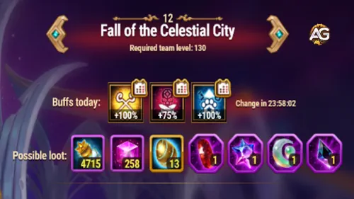

Melhores Rotas Mapa #12 - Queda da Cidade Celestial 2026
Aqui estão as rotas recomendadas para cada jogador. Os parênteses () indicam torres inimigas que devem ser
destruídas para enfraquecer o chefe. Não tenha pressa o tempo é tudo.
Guia Queda da Cidade Celestial - Hero Wars: Dominion Era, um jogo desenvolvido pela Nexters.
O Mapa de Aventura nº12, Queda da Cidade Celestial, é um dos desafios mais emocionantes e estratégicos em
Hero Wars: Dominion Era. Não se trata apenas de força bruta, mas de paciência, coordenação
e da emoção de ver os aliados da sua guilda avançando juntos por um campo de batalha intrincado.
Se você chegou a este estágio, já não é mais um iniciante você é um estrategista, um líder e alguém que entende
que o caminho para a vitória é pavimentado com confiança e trabalho em equipe.
Vamos mergulhar em tudo o que você precisa saber para dominar este mapa, desde a preparação até a derrota do chefe final.
Mapa de Aventura de PET nº12 – Queda da Cidade Celestial
Nível Mínimo de Herói: 130+
Poder Total Recomendado: 700k+
Este mapa é projetado para três membros da guilda, cada um seguindo um caminho distinto Azul, Amarelo e Verde.
Cada passo conta. Torres de reforço, esquadrões inimigos e mecânicas do chefe se entrelaçam para formar um enigma
que apenas a coordenação pode resolver. Conforme você avança, lembre-se: quanto mais torres derrubar, mais fraco o chefe ficará.
A comunicação é o ingrediente secreto da vitória.
Compreendendo a Jornada
Antes de mergulhar nos caminhos e estratégias, é importante visualizar esta aventura como uma jornada compartilhada.
Cada membro tem sua missão, mas nenhum pode vencer sem os outros. O caminho Amarelo desbloqueia torres críticas,
o caminho Azul é ideal para jogadores rápidos e o caminho Verde traz armadilhas de paciência, aguardando os aliados antes de avançar.
Cada decisão ecoa pelo mapa um passo cedo demais, e sua equipe enfrentará um chefe sobrecarregado.
Um passo tarde demais, e preciosos Pontos de Ação serão desperdiçados.
Estratégia para Derrotar o Chefe
Para derrubar este titã, os membros da guilda devem coordenar seu tempo:
Caminho Amarelo: A espinha dorsal da luta. Responsável por remover os principais reforços torres 28, 26 e 19. No entanto, a paciência é fundamental: o Amarelo deve esperar que Azul e Verde cheguem aos seus pontos de controle antes de avançar.
Caminho Verde: O caminho mais fácil em termos de mecânica, mas cheio de armadilhas de espera. O Verde não pode capturar a torre 25 até que o Amarelo derrube a torre 14, ou o caminho se transforma em caos.
Caminho Azul: Ideal para jogadores rápidos que entram primeiro. Sua missão principal é destruir a torre 34, que reduz significativamente o poder destrutivo do chefe.
Uma vez que essas torres são destruídas, o chefe se torna vulnerável. Monte seus heróis mais fortes com mascotes que contra-atacam
o reforço do dia, concentre o dano com cuidado e lembre-se: nenhum ataque pode causar mais de 1% da vida dele.
Persistência, e não explosões, levará à vitória.
O Desafio do Chefe
O chefe no Mapa nº12 é um verdadeiro teste de paciência. Avançar para a luta sem derrubar as torres é um erro
que até guildas experientes cometem. O chefe recebe enormes reforços até que as torres do Olho do Arauto sejam destruídas.
Reforço do Chefe
Efeito
Como Remover
Aumento de Dano
+300% de Dano
Derrotar Esquadrão 34
Resistência a Dano
-95% de Dano Recebido
Derrotar Esquadrão 26
Resistência a Dano
-95% de Dano Recebido
Derrotar Esquadrão 28
Aumento de Cura
+500% de Cura
Derrotar Esquadrão 19
Reforços do Chefe (Atributos Base)
Aumenta o dano causado em 300%
Reduz o dano recebido em 50%
Multiplica a Vida por 10
Aumenta o ganho de energia em 100%
Reduz a duração de efeitos negativos em 80%
Nenhum ataque pode causar mais de 1% da vida máxima
Imune à redução de energia
Possíveis Recompensas do Mapa nº12
Uma das maiores motivações para concluir esta aventura são as recompensas. O mapa 12 concede uma mistura equilibrada
de poções, partículas e pedras raras usadas para mascotes. Aqui está o que você pode esperar:

Possíveis Recompensas do Mapa nº12, Hero Wars Dominion Era.
Item
Quantidade
Observações
Poção de PET
4715
Essencial para evoluir mascotes
Partícula do Caos
258
Usada para evoluir mascotes
Esfera de Invocação de PET
13
Invoca novos mascotes
Pedra de Pato Impecável
1
Khorus, Cain, Vex
Pedra da Aurora Impecável
1
Biscuit, Axel
Pedra da Lua Impecável
1
Fenris, Merlin
Pedra da Noite Impecável
1
Khorus, Vex, Cain
Conclusão
O Mapa de Aventura nº12 é mais do que apenas outro passo em Hero Wars: Dominion Era. Ele é o exemplo perfeito do
que torna o conteúdo de guilda tão envolvente: comunicação, paciência e confiança. Cada ação de um jogador
é uma peça do quebra-cabeça maior, e somente quando os três caminhos avançam em harmonia a cidade cai em suas mãos.
Portanto, da próxima vez que você e seus companheiros de guilda se reunirem para esta missão, lembrem-se não se trata apenas de derrotar inimigos.
É sobre construir uma história juntos, um movimento de cada vez. A Queda da Cidade Celestial irá testá-los,
mas com trabalho em equipe, cada torre cairá e o chefe se curvará diante de sua força unida.
Sobre o autor
Alexandre Domingos é pós-graduado em Engenharia e atua como Supervisor de Produção. Nas horas vagas, se aventura como youtuber e blogueiro no Alexandre Games, unindo sua paixão por tecnologia e estratégia com o mundo dos games. Desde os 5 anos mergulha nesse universo, jogando em plataformas clássicas como MSX, Master System, Nintendo e até em um velho PC 286. Desde 2019, Alexandre também joga Hero Wars e Mobile Legends, entre outros jogos mobile, criando guias, tutoriais e análises para a comunidade.
Você gostou do nosso Guia do Mapa de Aventura nº12 para Hero Wars PC: Web e Facebook? Há algo que não entendeu ou gostaria de sugerir mudanças? Convidamos você a se juntar à nossa sessão de comentários na página do Alexandre Games Blog. Não hesite em expressar sua opinião, clarificar suas dúvidas e compartilhar sua sugestões. Clique no botão abaixo para começar: